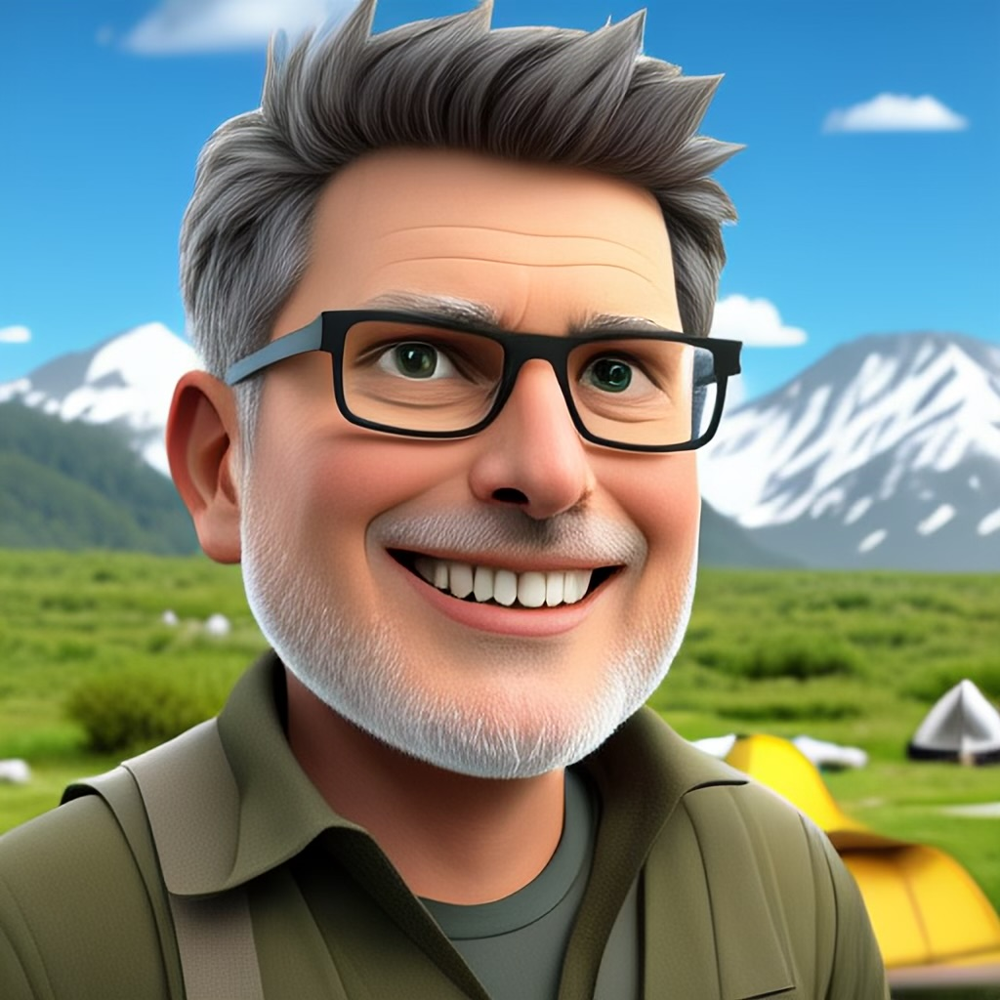

gbrown@annaruth.com
phone: 512-585-8602
Location: Austin, TX
# Gary Brown
## Executive Summary
Versatile product development professional with experience at all levels of product development from individual contributor, multiple levels of management and even as program manager for large programs.
I'm a committed partner in the business of product development, dedicated to getting results by both example and through a commitment to servant leadership.
I'm also dedicated to personal growth in technology usage, architecture, and building people.
## Technology Overview
## Working Experience
### Sabbatical (Dec 2024 -- Present)
Austin, Texas
I'm currently enjoying a sabbatical focused on three areas:
* Researching product ideas broadly in the area of applying configuration management across the enterprise.
* Researching and writing on topics surrounding the business of software management
* Writing a personal narrative based on childhood experiences
### [Planview, Inc.](https://www.planview.com)
#### Director, Product Development (Jun 2015 -- Dec 2025)
* Lead technology strategy and day-to-day operations of company wide analytics and reporting capabilities. Utilizing resources in India as well as local and remote US based people.
* Lead technology strategy and day-to-day operations of Enterprise Architecture offerings. This included all aspects of architecture and code as well as supporting successful operations of major customers.
* Worked closely with leadership on a wide array of operational priorities including systems architecture support, technology recommendations, operational strategy and hiring strategy.
### [Troux Technologies](https://www.planview.com/products-solutions/solutions/technology-application-portfolio-management/)
#### Vice President Product Development (Jun 2013 -- Jun 2015)
* Accountable for the success of all aspects of product development including architecture, usability, QA, release, and engineering
* Directly involved in java, UI coding and critical customer support including hands on large scale upgrades
#### Director, Product Development (Feb 2007 -- Jun 2013)
* Responsible for the success of all engineering and release processes.
* Directly involved in java, UI coding and critical customer support including hands on large scale upgrades
### Merant Software and Serena Software ([Microfocus](https://www.opentext.com/about/brands/microfocus)) (1999 -- Feb 2007)
#### Sr Software Engineer
* C++ engineer expanding "Tracker" issue management system backend and frontend development using MSFT
* C++ engineer enhancing PVCS web application features
#### Product Development Engineering Manager
* Supporting team supporting and expanding requirements management platform
#### Project Manager
* Managed large scale project expanding the entire configuration management suite including issue, requirements management and both major version control systems.
* Managed new product development project expanding version offerings.
#### Program Manager
* Managed program whose objective introduces a new configuration management platform.
## Education & Qualifications
### Master of Science Computer Science (1999)
#### [The George Washington University](https://www.gwu.edu/) (Washington, DC)
Emphasis on distributed operating systems
### Bachelor of Science (1990)
#### [Willamette University](https://willamette.edu/) (Salem, OR)
Emphasis on Economics and Philosophy